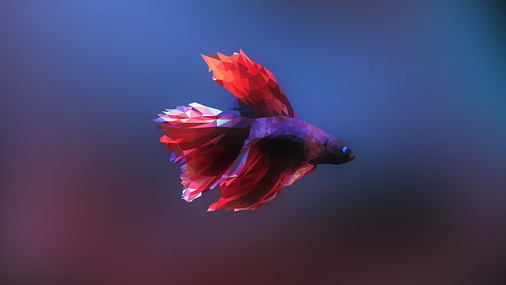

Ikan Cupang
Ikan Cupang adalah salah satu ikan hias yang paling populer di Indonesia. Ikan ini mudah sekali untuk ditemukan karena banyak penjual ikan yang menjual ikan cupang. Bahkan, banyak penjual ikan cupang keliling yang kadang bisa Anda temukan di pinggir jalan atau di depan sekolah-sekolah.
Ikan Cupang adalah ikan yang berasal dari jenis ikan berukuran kecil dengan ukuran sekitar 2,5 cm dan dapat tumbuh hingga 12,5 cm. Ikan ini sangat unik karena dapat menghirup udara yang tidak berada di dalam air yaitu dengan menggunakan organ tubuhnya yang disebut dengan labirin. Perawatan dan cara budidaya ikan cupang yang cukup mudah membuat banyak orang yang membudidayakannya. Ikan Cupang (Betta sp.) adalah ikan air tawar yang habitat asalnya adalah beberapa negara di Asia Tenggara, antara lain Indonesia, Thailand, Malaysia, Brunei Darussalam, Singapura, dan Vietnam. Ikan ini mempunyai bentuk dan karakter yang unik dan cenderung agresif dalam mempertahankan wilayahnya. Di kalangan penggemar, ikan cupang umumnya terbagi atas tiga golongan, yaitu cupang hias, cupang aduan, dan cupang liar. Di Indonesia terdapat cupang asli, salah satunya adalah Betta channoides yang ditemukan di Pampang, Kalimantan Timur. Ikan cupang adalah salah satu ikan yang kuat bertahan hidup dalam waktu lama sehingga apabila ikan tersebut ditempatkan di wadah dengan volume air sedikit dan tanpa adanya alat sirkulasi udara (aerator), ikan ini masih dapat bertahan hidup.
Perawatan
Ikan cupang dapat hidup di wadah seperti toples, akuarium atau lainya. Namun,, Anda sebaiknya menggunakan wadah berukuran tiga liter atau berdiameter 20 x 15 x 15 cm sehingga ikan leluasa bergerak dalam wadah tersebut. Wadah tersebut juga memudahkan saat dibersihkan secara rutin. Air yang baik untuk ikan cupang sangat disarankan menggunakan air dari sumur atau PAM yang sudah diendapkan lebih dulu selama kurang lebih sehari. Tetapi, lebih lama lebih bagus mengingat ikan cupang adalah jenis ikan air tawar. Jadi, dengan menggunakan air tersebut seakan jadi habitat aslinya dan membuat ikan cupang terasa nyaman.
Perawatan ikan cupang tidaklah sulit, tidak seperti ikan hias lainya seperti guppy, maskoki, dan lain-lain. Cukup rajin membersihkan tempatnya seperti akuarium atau toples, dan mengganti airnya. Disaraankan untuk mengganti setiap tiga kali sehari, atau paling lama seminggu sekali
Ikan cupang cukup diberi cacing sutera, kutu air, dan pelet kecil. Pemberiannya cukup sehari sekali dan berikanlah makanan ikan cupang secara bertahap. Ingat, jangan memberi makanan terlalu banyak karena makanan yang tersisa dapat mengotori akuarium dan memicu timbulnya penyakit. Selain memberi makan, ikan cupang juga sebagiknya diberi daun ketapang. Hal ini berguna sebagai antibiotik alami yang tepat untuk membantu menyebuhkan luka pada ikan cupang seperti ekor yang robek atau patah. Daun ketapang juga dapat membuat pH air stabil.
Reproduksi
Gunakan air sungai yang jernih untuk pemijahan antara ikan cupang jantan dan ikan cupang betina. Biarkan air dalam tempat tersebut selama satu malam sebelum memindahkan ikan. Masukkan tanaman air kedalam tempat pemijahan untuk para anak ikan berlindung. Masukkan ikan cupang jantan untuk membuat gelembung-gelembung udara yang akan digunakan untuk menyimpan para telur yang sudah dibuahi. Proses tersebut membutuhkan waktu selama satu hari.
Jika gelembung udara sudah siap, masukkan indukan betina. Pemijahan ikan cupang biasanya terjadi mulai pukul 7-10 pagi atau pukul 4-6 sore. Ikan cupang cukup sensitif jadi biarkan ikan cupang ditempat yang tenang agar tidak terganggu. Ikan cupang jantan yang akan berperan menjaga para telurnya, telur tersebut akan dipindahkan kedalam gelembung oleh ikan cupang jantan. Jika tidak dipindakan, ikan cupang betina akan memakan para telur. Setelah 3 hari para telur akan menetas, mereka tidak perlu diberi makan. Berilah kutu air dengan jumlah yang sedikit agar tidak terlalu banyak dan membuat kotor air dalam wadah.
Angkat ikan cupang jantan setelah 2 minggu sejak telur menetas. Pindahkan anak ikan tersebut ketempat yang lebih luas dan berikan kutu air atau larva nyamuk. Setelah 1,5 bulan pisahkan ikan-ikan tersebut sesuai dengan jenis kelaminnya. Itulah cara ternak ikan cupang.